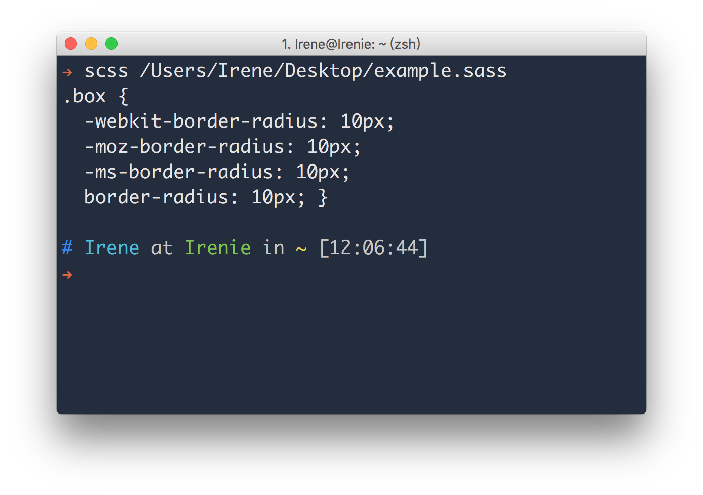

使用 Gulp 編譯 Sass
Sass 需要編譯成 CSS 才能在瀏覽器上看到結果。在終端機輸入 sass 或 scss 指令，就能在終端機上看到編譯後的結果：

Gulp
Gulp 是一套基於 Node.js 的任務自動化管理工具，能夠將各種任務（編譯、壓縮、重新命名⋯⋯等）串接起來並一次執行。
使用 Gulp 前需要先安裝 Node.js ( https://nodejs.org/ )，再透過以下指令安裝 Gulp：
npm install -g gulp移動到專案目錄底下，輸入 npm init 來初始化，並為這個專案安裝 Gulp 套件：
npm install gulp -save-dev接著安裝 gulp-sass 這個套件來編譯 Sass：
npm install gulp-sass --save-devgulpfile.js
在專案根目錄之下，新增 gulpfile.js：
var gulp = require('gulp'), // 載入 gulp
gulpSass = require('gulp-sass'); // 載入 gulp-sass，並指定給 gulpSass 這個變數
gulp.task('styles', function () { // 'styles' 是這個任務的名稱，可以任意命名
gulp.src('./src/style/*.scss') // 指定要處理的 Sass 檔案目錄
.pipe(gulpSass()) // 編譯 Sass
.pipe(gulp.dest('./dist/style')); // 指定編譯後的 CSS 檔案目錄
});
gulp.task('default',['styles']);在終端機輸入 gulp 指令來執行上述程式碼，結束後就能在指定的輸出目錄之下找到編譯完成的 CSS 檔案。